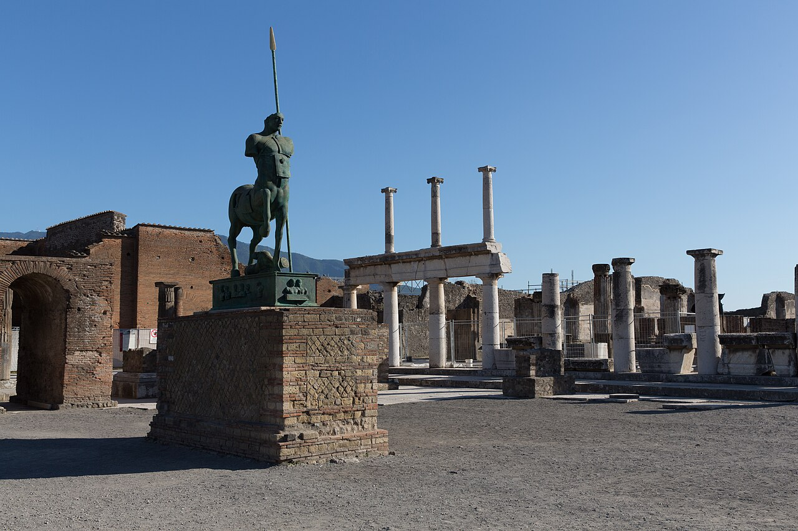

Naples and Pompeii · 5-day family itinerary
One Naples base, a timed Pompeii morning that respects winter last entry, and the Archaeological Museum on a day it is actually open.

Photo: Ekrem Canli, Basilica (Pompeii), 2016, CC BY-SA 4.0, via Wikimedia Commons.
,_2016.jpg){kind=link}
Checked before you commit
This illustrative route keeps four nights in one Naples base and uses Alibus from Capodichino, the Circumvesuviana to Pompeii, and a separate museum day at MANN. The order of Days 2 and 3 follows winter last-entry at the park and the museum’s ordinary Tuesday closure. Hours and prices below come from pages opened on 13 October 2026. Nothing was booked.
One hotel in Naples. Pompeii is a day trip on the Circumvesuviana Napoli–Sorrento line to Pompei Villa dei Misteri, not a second overnight. MANN sits on a non-Tuesday. No same-day Vesuvius climb.
One hard archaeological or museum anchor a day, with a soft arrival day and a soft historic-centre day. Pompeii under winter rules needs an early start because last entry is 15:30.
Park slots, museum time slots, Circumvesuviana boards and Alibus first/last times were not checked for your dates. A booking-hub link is intent only. It does not buy a Pompeii ticket, a MANN ticket or an EAV fare.
Planning boundary: dates are illustrative. The worked example runs Wednesday 14 to Sunday 18 October 2026. Hours and “from” prices come from pages opened on 13 October 2026. Alfred does not read a park capacity calendar or a museum closed-day list while it writes the day. Book opens a partner checkout. It does not prove that a ticket exists. Naples and Pompeii are not destination guides in the signed-in app.
Route and family-coordination brief
Party: two adults and school-age children. Base: four nights in Naples, preferably within an easy walk or short metro/bus of Piazza Garibaldi or the historic centre so the Circumvesuviana and Alibus stay simple. Pace: moderate, one hard anchor a day. Budget input: Mid Range. The only prices stated here are the ones a page actually printed.
Getting there: Naples Airport’s “By bus” page describes Alibus as the fast link between Capodichino, Piazza Garibaldi (Central Station) and the port (Immacolatella / Porta di Massa and Molo Angioino–Beverello). Journey time Airport–Central Station is about 15 minutes; Airport–Port about 35 minutes. Tickets can be bought at vending machines on the ground floor of the arrivals area. Recheck first and last departures and the current fare on the ANM Alibus page before you fly.
Getting to Pompeii: the Archaeological Park’s “How to get there” page lists Circumvesuviana Napoli–Sorrento, stop Pompei Villa dei Misteri, for the Porta Marina and Piazza Esedra entrances, and Napoli–Poggiomarino stop Pompei Santuario for Piazza Anfiteatro. EAV’s tickets page lists GoEav, Tap&Go on the Napoli–Sorrento line, and station QR channels. Exact train minutes and fares weren’t listed, so leave slack and check the live board.
The calendar order: Pompeii’s winter timetable (15 October–15 March) opens at 09:00, last entry 15:30, close 17:00. Summer (16 March–14 October) runs later, with capped morning and afternoon admission windows. Tickets are personal, with a 20,000 daily limit, and the official online path is Vivaticket. MANN is open 09:00–19:30 with last entry 18:30, and closed on ordinary Tuesdays. So Pompeii comes on Thursday 15 October (winter clock) and MANN on Friday 16 (open day).
Day 1 — Alibus in, then a soft waterfront reset
Land at Naples Capodichino and take Alibus toward Piazza Garibaldi (Central Station). The airport operator lists about 15 minutes for that leg and names onward stops toward the port. Buy or collect a ticket before you board when you can — arrivals-area machines are listed on the airport page — then validate as the operator requires.
Check in, drop bags, and keep the afternoon light: a short lungomare walk toward the Castel dell’Ovo / Santa Lucia waterfront is enough. Do not start Pompeii or MANN on arrival day.
Fallback: if the flight or bags run late, skip the waterfront and use the hotel as the reset. Do not “save” Pompeii by squeezing it into a late Day 1 — winter last entry is already a hard afternoon boundary on Day 2.
Live-check: Alibus first/last departures and fare on the ANM Alibus page; hotel bag storage; evening weather for a waterfront walk.
Day 2 — Pompeii on a winter last-entry clock
This is the hard day. From Piazza Garibaldi take the Circumvesuviana Napoli–Sorrento line to Pompei Villa dei Misteri for Porta Marina or Piazza Esedra. Hold nominative tickets bought in advance on the official Vivaticket path so you can go to the turnstiles with a PDF or phone ticket. From 12 January 2026 the park’s page lists Pompeii Express at €20 and Pompeii Plus at €25 (EU 18–25 reduced €2 where it applies).
Worked date Thursday 15 October 2026 sits on the winter timetable: open 09:00, last entry 15:30, close 17:00. Aim for a morning-capable arrival so walking time inside the park still exists after security and the entrance walk. Bag rules on the park site limit bags to a small size (30×30×15 cm max on the homepage notice); leave large luggage at the hotel.
Pick one entrance cluster and one coherent route rather than racing the whole city. Porta Marina / Piazza Esedra suit the Villa dei Misteri stop; Piazza Anfiteatro suits a different Circumvesuviana branch.
Fallback: if trains or entry queues eat the morning, shorten to one neighbourhood of the site and protect the 15:30 last-entry line. There is no late “soft” entry. If the day fails entirely, swap with Day 4 only after you still have a valid ticket date and an open calendar.
Live-check: Vivaticket availability for your names and date; winter vs summer hours; which buildings are open that day; EAV board for Napoli–Sorrento; return trains with enough slack for tired children.
Day 3 — MANN on a day the museum is open
National Archaeological Museum of Naples (MANN), Piazza Museo 18/19. Ordinary hours on the museum page are 09:00–19:30, last entry 18:30, with staff clearing galleries from 19:00. It is closed on ordinary Tuesdays (with named 2026 holiday exceptions that open the Tuesday and close the following Wednesday instead). Worked date Friday 16 October 2026 is an ordinary open day.
General admission is listed at €20. Under-18s are free, but free still starts through the museum’s ticket path. The visitor regulation recommends buying online in advance with a preferred time slot and without an advance-sale fee; buying only on site does not guarantee quick entry. Children under 12 must stay with an adult.
Choose one or two wings that match the children’s stamina (for example frescoes / everyday objects tied to what they saw at Pompeii) rather than treating the whole museum as a single uninterrupted march. Check the museum’s current gallery-opening schedule the morning you go — sections rotate.
Fallback: if energy is low after Pompeii, cut to a single floor and a café break, or swap this museum morning with the soft Day 4 walk and keep MANN shorter in the afternoon inside last-entry rules.
Live-check: Tuesday closure exceptions; online time slot; which galleries are open; free-admission days (desk-only tickets; some sections closed).
Day 4 — Soft historic centre and lungomare, no second dig
Keep the day soft on purpose. Walk a short historic-centre stretch (Spaccanapoli / Via dei Tribunali area) in the cooler morning, then break for a long lunch and a lungomare reset toward the water. Do not add Herculaneum, Oplontis or a Vesuvius climb onto this recovery day — those sites keep their own calendars (Oplontis and the Stabiae villas are listed closed on Tuesdays on the Pompeii hours table) and need their own ticket and transfer plan.
If someone still wants archaeology without another rail day, use the morning only for a short MANN revisit only if Day 3 was truncated and tickets still allow — otherwise stay outdoors and local.
Fallback: hotel rest window after lunch; swap a short waterfront gelato walk for any uphill neighbourhood climb if heat or fatigue shows.
Live-check: weather; neighbourhood festival closures; whether anyone still needs a pharmacy or laundry before departure day.
Day 5 — A short morning, then Alibus back to Capodichino
Check out and leave bags at the hotel if it allows. Keep only a short neighbourhood walk. Do not start Pompeii, MANN or any new paid archaeological site on departure morning.
Return to Capodichino on Alibus from Piazza Garibaldi or the listed port stops, depending on where you are staying. The airport page quotes about 15 minutes for the station–airport leg in ordinary conditions; build slack for bags, children and security rather than chasing the last useful bus.
Fallback: with a tight flight, skip every optional stop and take an earlier Alibus. Do not try to recover Pompeii on the way to the airport.
Live-check: ANM Alibus first/last departures and fare; traffic on the airport road; airline check-in cut-off.
Planning notes
Dates are illustrative. Recheck Pompeii season hours and last-entry times, Vivaticket nominative availability and the daily cap, MANN Tuesday closures and gallery schedules, Circumvesuviana boards, and Alibus first/last departures at decision time. A travelling profile is required. On web Lets Go, Holiday takes origin, destination, dates, a budget step and a day pace, then Plan my trip queues the itinerary. A Moderate day pace fills a morning and an afternoon activity slot, with lunch and dinner. The Estimated costs bar, when it appears, is a rounded median of flight-and-hotel packages, not a park or museum ticket. While the trip is still Planning, you can keep or change the hotel and then the flights Alfred picked. Once it is ACTIVE, it can be viewed, edited and shared, and an item’s title, times and notes can be edited by hand, so a winter last-entry line or a Tuesday museum closure can sit on the card. If you ask Hey Alfred to retime the itinerary, venue times move but flights, hotels and transfers stay as they are, so a changed transfer is a hand edit. Hey Alfred can swap two full days after you confirm, such as Day 2 and Day 3, but not a day with a flight. Book opens a partner checkout. It does not buy a Pompeii ticket or a MANN ticket. Naples and Pompeii are not destination guides in the signed-in app.
Plan a trip
Start with your people, dates and pace, then review the editable plan before booking.
Plan a trip